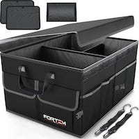

|
Affiliate Disclosure
Amazon: “As an Amazon Associate I earn from qualifying purchases.” Others: “When you buy something we recommend, we may get an affiliate commission — but it never affects your price or what we pick.” |
Essential DIY Tools
Equipping Yourself for Successful Home Projects and Repairs
DIY tools are an essential part of any do-it-yourself enthusiast’s arsenal, enabling them to tackle a wide range of projects, repairs, and home improvement tasks. These tools are specifically designed to empower individuals to take on tasks without the need for professional help. Here are some common categories of DIY tools that every aspiring DIYer should be familiar with:
Hand tools are the backbone of any DIY toolkit. These manual tools are designed to be operated by hand, providing versatility and control. Hammers are used for driving and removing nails, while screwdrivers come in various types to tighten or loosen screws. Wrenches are ideal for tightening or loosening bolts and nuts, and pliers provide a firm grip for holding and manipulating objects. Chisels are used for carving or cutting materials, making them indispensable for woodworking or masonry projects.
Power tools have revolutionized the DIY world by offering increased efficiency and productivity. These electrically or battery-powered tools are capable of handling a wide range of tasks. Power drills are essential for drilling holes and driving screws, while saws, such as circular saws or jigsaws, make cutting through various materials a breeze. Sanders are ideal for achieving smooth finishes, and nail guns speed up the process of fastening materials securely.
Measuring and layout tools are essential for accurate and precise work. DIYers rely on tape measures for taking measurements, ensuring that materials are cut to the correct dimensions. Levels help achieve straight and even surfaces, ensuring the alignment of various elements in a project. Squares are useful for checking right angles, while rulers provide precise measurements for smaller-scale tasks.
Safety equipment is paramount in any DIY endeavor. Protecting oneself from potential hazards is crucial for a successful and injury-free project. Safety glasses shield the eyes from flying debris, and ear protection guards against excessive noise exposure. Gloves provide grip and protection for the hands, while dust masks filter out harmful particles and fumes.
Painting and decorating tools are essential for those looking to transform their spaces. Paint brushes allow for precise application, while rollers cover larger surfaces quickly and efficiently. Scrapers come in handy for removing old paint or wallpaper, and sandpaper helps achieve a smooth and polished finish.
Garden tools cater to the outdoor DIY enthusiasts. Shovels are essential for digging holes or moving soil, while rakes help with clearing leaves or leveling surfaces. Pruning shears enable precise trimming and shaping of plants, and hedge trimmers make maintaining hedges or bushes a breeze.
Choosing the right DIY tools for a project is vital for achieving optimal results. Considering the specific requirements of the task at hand, such as the materials involved and the complexity of the project, ensures that the appropriate tools are selected. It is also important for DIYers to invest in quality tools that are durable and reliable, as they will likely be used repeatedly.
Proper maintenance of DIY tools is essential for their longevity and effectiveness. Regular cleaning, lubrication, and sharpening of tools ensure that they remain in optimal condition and perform at their best. Storing tools in a dry and organized manner prevents damage and makes them easily accessible for future projects.
In conclusion, DIY tools are the backbone of any do-it-yourself enthusiast’s toolkit. Hand tools, power tools, measuring and layout tools, safety equipment, painting and decorating tools, and garden tools are all essential categories to consider. By selecting the right tools and maintaining them properly, DIYers can tackle projects with confidence, ensuring safety, efficiency, and successful outcomes.
Here are six common DIY tools that are frequently used for a variety of projects:
1. Hammer: A hammer is a versatile hand tool used for driving nails, removing nails, and general construction tasks. It consists of a weighted head and a handle.
2. Screwdriver: Screwdrivers come in various sizes and types and are used for turning screws. They have a handle for grip and a shaft with a tip that matches the screw head, allowing for tightening or loosening.
3. Power Drill: A power drill is an electric tool that can drill holes in various materials and drive screws with ease. It typically has adjustable speed settings and different drill bit attachments.
4. Tape Measure: A tape measure is an essential measuring tool used for taking accurate length, width, and height measurements. It usually has a retractable metal tape with metric and imperial measurements.
5. Adjustable Wrench: Also known as a crescent wrench, an adjustable wrench is a versatile tool used for tightening or loosening nuts and bolts of various sizes. Its jaws can be adjusted to fit different fasteners.
6. Utility Knife: A utility knife, also called a box cutter or craft knife, is a sharp cutting tool with a retractable blade. It is useful for cutting materials like cardboard, carpet, plastic, or opening packages.
These tools provide a basic foundation for many DIY projects and repairs. Depending on the specific task or project, additional tools may be required to achieve optimal results.
You may be interested in these related products:
Let’s Party: Party Supplies and Decorations

Party supplies and decorations play a crucial role in creating a festive and memorable atmosphere for any celebration.
Accessorize with Style: Jewelry Options for Every Occasion

Jewelry has the power to elevate any outfit and make a statement. Whether you're attending a formal event, heading to work, or simply going about your daily activities, there are jewelry options avail...
Everyday Jewelry: Constant use Jewelry

Everyday jewelry is meant to be versatile and effortlessly complement your daily attire.
Nutrition and Flavor: Exploring the World of Food and Beverages

Food and beverages are essential aspects of our daily lives. They not only provide nourishment and sustenance but also offer enjoyment, socialization, and cultural expression.
Common Car Parts and Accessories: Know Your Car

Common car parts and accessories play a crucial role in maintaining and enhancing the functionality, safety, and aesthetics of vehicles.